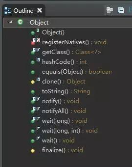

今天说一道基础题型，不过很多人会忽略或者至少说不完整，但是面试时被问到的几率还是很大的。
Object有几种方法呢？
Java语言是一种单继承结构语言，Java中所有的类都有一个共同的祖先。这个祖先就是Object类。
如果一个类没有用extends明确指出继承于某个类，那么它默认继承Object类。
Object的方法我们在平时基本都会用到，但如果没有准备被忽然这么一问，还是有点懵圈的。
Object类是Java中所有类的基类。位于java.lang包中，一共有13个方法。如下图：

这个没什么可说的，Object类的构造方法。(非重点)
为了使JVM发现本机功能，他们被一定的方式命名。例如，对于java.lang.Object.registerNatives，对应的C函数命名为Java_java_lang_Object_registerNatives。
通过使用registerNatives（或者更确切地说，JNI函数RegisterNatives），可以命名任何你想要你的C函数。(非重点)
clone()函数的用途是用来另存一个当前存在的对象。只有实现了Cloneable接口才可以调用该方法，否则抛出CloneNotSupportedException异常。（注意：回答这里时可能会引出设计模式的提问）
final方法，用于获得运行时的类型。该方法返回的是此Object对象的类对象/运行时类对象Class。效果与Object.class相同。（注意：回答这里时可能会引出类加载，反射等知识点的提问）
equals用来比较两个对象的内容是否相等。默认情况下(继承自Object类)，equals和==是一样的，除非被覆写(override)了。（注意：这里可能引出更常问的“equals与==的区别”及hashmap实现原理的提问）
该方法用来返回其所在对象的物理地址（哈希码值），常会和equals方法同时重写，确保相等的两个对象拥有相等的hashCode。（同样，可能引出hashmap实现原理的提问）
toString()方法返回该对象的字符串表示，这个方法没什么可说的。
导致当前的线程等待，直到其他线程调用此对象的 notify() 方法或 notifyAll() 方法。（引出线程通信及“wait和sleep的区别”的提问）
导致当前的线程等待，直到其他线程调用此对象的 notify() 方法或 notifyAll() 方法，或者超过指定的时间量。（引出线程通信及“wait和sleep的区别”的提问）
导致当前的线程等待，直到其他线程调用此对象的 notify() 方法或 notifyAll() 方法，或者其他某个线程中断当前线程，或者已超过某个实际时间量。（引出线程通信及“wait和sleep的区别”的提问）
唤醒在此对象监视器上等待的单个线程。（引出线程通信的提问）
唤醒在此对象监视器上等待的所有线程。（引出线程通信的提问）
当垃圾回收器确定不存在对该对象的更多引用时，由对象的垃圾回收器调用此方法。（非重点，但小心引出垃圾回收的提问）
equals() 与 == 的区别是什么？
hashCode() 和 equals() 之间有什么联系？
wait()方法与sleep()方法的区别
为什么重写了equals就必须重写hashCode
HashMap的实现原理
谈谈类加载机制
后续我们就这些常见问题一一做一些解答，当然，可能大部分人对这类问了八百遍的问题已经倒背如流了
最近三期